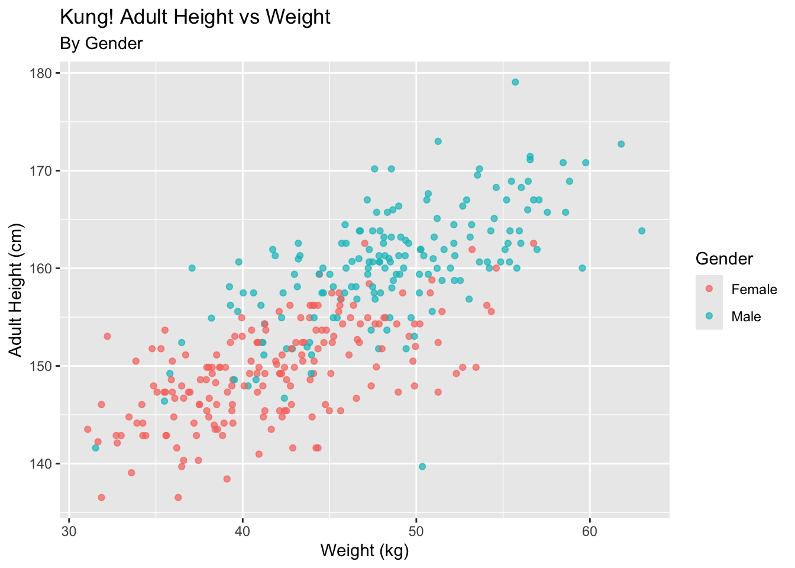
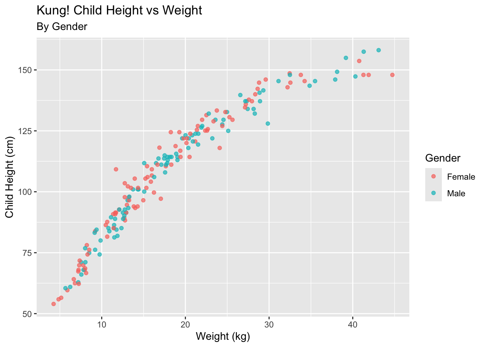
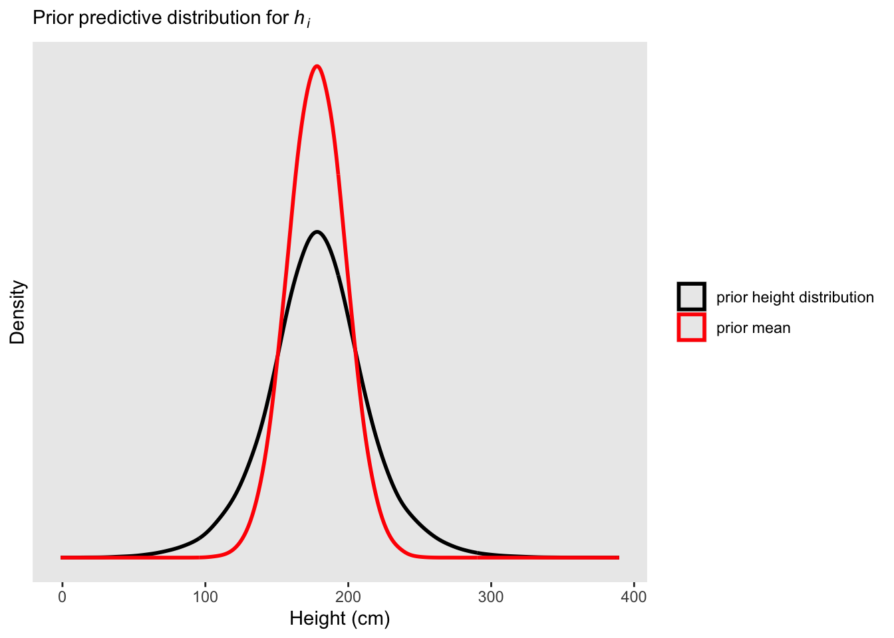

Loading 'brms' package (version 2.22.0). Useful instructions
can be found by typing help('brms'). A more detailed introduction
to the package is available through vignette('brms_overview').
Attaching package: 'brms'
The following object is masked from 'package:stats':
ar
── Conflicts ────────────────────────────────────────── tidyverse_conflicts() ──
✖ dplyr::filter() masks stats::filter()
✖ dplyr::lag() masks stats::lag()
ℹ Use the conflicted package (<http://conflicted.r-lib.org/>) to force all conflicts to become errors
library(patchwork)library(metR) # for geom_contour_fill
Attaching package: 'metR'
The following object is masked from 'package:purrr':
cross
kHeight_adult <- kHeight %>%filter(age >=18)kHeight_child <- kHeight %>%filter(age <18)ggplot(data = kHeight, aes(x = weight, y = height, color =as.factor(male)))+geom_point(alpha = .7)+labs(x="Weight (kg)", y ="Height (cm)", title ="Kung! Height vs Weight", subtitle ="By Gender")+scale_color_discrete(name ="Gender", labels =c("Female", "Male"))
ggplot(data = kHeight_adult, aes(x = weight, y = height, color =as.factor(male)))+geom_point(alpha = .7)+labs(x="Weight (kg)", y ="Adult Height (cm)", title ="Kung! Adult Height vs Weight", subtitle ="By Gender")+scale_color_discrete(name ="Gender", labels =c("Female", "Male"))

ggplot(data = kHeight_child, aes(x = weight, y = height, color =as.factor(male)))+geom_point(alpha = .7)+labs(x="Weight (kg)", y ="Child Height (cm)", title ="Kung! Child Height vs Weight", subtitle ="By Gender")+scale_color_discrete(name ="Gender", labels =c("Female", "Male"))

Plotting the Prior
# mean priorggplot(data =tibble(x =seq(from =100, to =250, by = .1)), aes(x = x, y =dnorm(x, mean =178, sd =20))) +scale_y_continuous(NULL, breaks =NULL) +geom_line() +labs(title ="Prior Mean for Height", x ="Height (cm)", y ="density")
# posterior distribution of height prior and meann <-1e5tibble(sample_mu =rnorm(n, mean =178, sd =20),sample_sigma =runif(n, min =0, max =50)) %>%mutate(x =rnorm(n, mean = sample_mu, sd = sample_sigma)) %>%ggplot() +geom_density(aes(x = x, color ="prior height distribution"), linewidth =1, adjust =2) +geom_density(aes(x = sample_mu, color ="prior mean"), linewidth =1, adjust =2) +scale_color_manual(values =c("prior height distribution"="black", "prior mean"="red")) +scale_y_continuous(breaks =NULL) +labs(subtitle =expression(Prior~predictive~distribution~"for"~italic(h[i])),x ="Height (cm)", y ="Density",color =NULL) +# removes legend titletheme(panel.grid =element_blank())

Grid approximation technique
n <-200d_grid <-# we'll accomplish with `tidyr::crossing()` what McElreath did with base R `expand.grid()`crossing(mu =seq(from =130, to =180, length.out = n),sigma =seq(from =0, to =15, length.out = n))grid_function <-function(mu, sigma) {dnorm(kHeight_adult$height, mean = mu, sd = sigma, log = T) %>%sum()}d_grid <- d_grid %>%mutate(log_likelihood =map2(mu, sigma, grid_function)) %>%unnest(log_likelihood) %>%mutate(prior_mu =dnorm(mu, mean =150, sd =10, log = T),prior_sigma =dunif(sigma, min =0, max =10, log = T),product = log_likelihood + prior_mu + prior_sigma,probability =exp(product-max(product)),prior_product = prior_mu + prior_sigma,prior_probability =exp(prior_product -max(prior_product)))prior_grid <-tibble(prior_mu =log(rnorm(1e5, mean =150, sd =10)),prior_sigma =log(runif(1e5, min =0, max =10))) %>%mutate(product = prior_mu + prior_sigma,probability =exp(product -max(product)))prior_plot <-ggplot(data = d_grid) +geom_point(aes(x = mu, y = sigma, color = prior_probability), alpha = .1) +theme(panel.grid =element_blank()) +scale_color_viridis_c(name ="Prior Probability", option ="A") +labs(title ="Prior")posterior_plot <-ggplot(data = d_grid) +geom_point(aes(x = mu, y = sigma, color = probability), alpha = .5) +theme(panel.grid =element_blank()) +scale_color_viridis_c(name ="Posterior Probability", option ="A") +labs(title ="Posterior")prior_plot + posterior_plot +plot_layout(guides ="collect")
ggplot(d_grid) +geom_point(aes(x = mu, y = sigma, color ="Prior", alpha = prior_probability)) +geom_point(aes(x = mu, y = sigma, color ="Posterior", alpha = probability)) +scale_color_manual(values =c("Prior"="blue", "Posterior"="red")) +scale_alpha(name ="Normalized Likelihood", range =c(0, 0.6)) +labs(title ="Prior vs Posterior", color ="Distribution") +theme_minimal()
For execution on a local, multicore CPU with excess RAM we recommend calling
options(mc.cores = parallel::detectCores()).
To avoid recompilation of unchanged Stan programs, we recommend calling
rstan_options(auto_write = TRUE)
For within-chain threading using `reduce_sum()` or `map_rect()` Stan functions,
change `threads_per_chain` option:
rstan_options(threads_per_chain = 1)
Attaching package: 'rstan'
The following object is masked from 'package:tidyr':
extract
The following objects are masked from 'package:posterior':
ess_bulk, ess_tail
mu <-fitted(b4.3, summary = F)# new dataweight_seq <-tibble(weight_c =seq(from =-18, to =18, by =1))mu <-fitted(b4.3,summary = F,newdata = weight_seq) %>%as_tibble() %>%# here we name the columns after the `weight` values from which they were computedset_names(-18:18) %>%mutate(iter =1:n())
Warning: The `x` argument of `as_tibble.matrix()` must have unique column names if
`.name_repair` is omitted as of tibble 2.0.0.
ℹ Using compatibility `.name_repair`.
mu <- mu %>%gather(weight, height, -iter) %>%# we might reformat `weight` to numeralsmutate(weight =as.numeric(weight))ggplot()+geom_point(data = mu, aes(x = weight, y = height), alpha = .002, color ="blue")+geom_point(data = kHeight_adult, aes(x = weight_c, y = height))
Warning in geom_line(aes(y = temp), color = "navyblue", shape = 1): Ignoring
unknown parameters: `shape`
# I am confused as to why the the Thin plated splines don't go more crazy and try to fit all of the contours
Hard Questions
4H1
The weights listed below were recorded in the !Kung census,but heights were not recorded for these individuals. Provide predicted heights and 89% intervals for each of these individuals. That is, fill in the table below, using model-based predictions.
b4.3<-brm(data = kHeight, family = gaussian, height ~1+ weight_s,prior =c(prior(normal(178, 100), class = Intercept),prior(normal(0, 10), class = b),prior(uniform(0, 8), class = sigma, ub =8)),iter =2000, warmup =1000, chains =4, cores =4,seed =4, backend ="cmdstanr", silent =2,file ="fits/b04.03.2")b4.8_smooth <-brm(data = kHeight,family = gaussian,formula = height ~1+s(weight_s, bs ="tp"), # k sets number of basis functionsprior =c(prior(normal(178, 100), class = Intercept),prior(normal(0, 10), class = b),prior(student_t(3, 0, 1), class = sds), # Prior for smooth termprior(exponential(4), class = sigma) ),backend ="cmdstanr", silent =2,iter =2000,warmup =1000,chains =4,cores =4,seed =42,control =list(adapt_delta =0.99),file ="fits/b04.08.1")new_weight_seq <-tibble(weight_c =c(46.95, 43.72, 64.78, 32.59, 54.63) -mean(kHeight$weight))mu_4.3<-fitted(b4.3, summary = F)mu_4.3<-fitted(b4.3,summary = F,newdata = new_weight_seq) %>%as_tibble() %>%set_names(c(46.95, 43.72, 64.78, 32.59, 54.63) -mean(kHeight$weight)) %>%mutate(iter =1:n())mu_4.3<- mu_4.3%>%gather(weight, height, -iter) %>%# we might reformat `weight` to numeralsmutate(weight =as.numeric(weight))ggplot()+geom_point(data = mu_4.3, aes(x = weight, y = height), alpha = .002, color ="blue")+geom_point(data = kHeight, aes(x = weight_s, y = height))+coord_cartesian(xlim =range(kHeight$weight))